Generative AI for Life Science¶
Generative AI has become both highly prevalent and highly divisive. While public opinion varies, rapid advancement in GenAI is transforming the life sciences, enabling new approaches to understand biological systems, predict molecular structures and advance clinical diagnostics.
In this workshop, we will demonstrate how GenAI is applied across key life science domains through four interactive sessions. Participants will train models, explore biological datasets and generate real outputs such as synthetic cell images, protein structure predictions, and mRNA sequences for vaccines. By the end of the workshop, you will have hands-on experience in developing GenAI techniques and applying them to solve real-world life science problems.
Prerequisites
Basic understanding of Python programming
Familiarity with machine learning concepts
Interest in life science applications
Setup¶
Python is a popular language for scientific computing, and a frequent choice for machine learning as well.
This workshop will use a Python environment containing JupyterLab and the necessary dependencies as the primary interface for all practical sessions. You are encouraged to follow the local installation option. Google Colab will be available as a fallback option if needed.
Please set up your Python environment at least a day in advance of the workshop. If you encounter problems with the installation procedure, attend the pre-workshop setup session for assistance, so that you are ready to go as soon as the workshop begins.
Local installation¶
Important
You have different options:
Use pip and virtual environments: If you have
gitin your terminal and are comfortable using virtual environments and have a working Python interpreter (at least version 3.10 or above), orUse Miniforge / pixi and conda environments: Recommended for Windows users, and users who don’t have tools like a Python interpreter,
gitin their devices.
Once you have done either, proceed to getting the notebooks. Finally download the datasets
Using pip¶
Open a terminal (Mac/Linux) or Command Prompt (Windows) and run the following commands.
Create a virtual environment called
workshop:
python3 -m venv workshop
Activate the newly created virtual environment:
source workshop/bin/activate
workshop\Scripts\activate
Remember that you need to activate your environment every time you restart your terminal!
Install the required packages:
Once you have activated your environment, you can install all the required packages for this workshop using the following command:
pip install -r https://raw.githubusercontent.com/sweden-ai-factory/gen-ai-for-life-science/refs/heads/main/requirements.txt
Using Miniforge¶
In this page, we give indications about how to install Miniforge and use conda/mamba.
The first step is to install Miniforge, which is a modified version of Miniconda using by default the community driven conda-forge channel.
Download the installer using curl or wget or your favorite program. For eg:
wget "https://github.com/conda-forge/miniforge/releases/latest/download/Miniforge3-$(uname)-$(uname -m).sh"
or
curl -L -O "https://github.com/conda-forge/miniforge/releases/latest/download/Miniforge3-$(uname)-$(uname -m).sh"
Execute the installer and initialize conda:
bash Miniforge3-$(uname)-$(uname -m).sh -b
$HOME/miniforge3/bin/conda init --all
On Windows, download the Windows installer and follow the instructions given in https://github.com/conda-forge/miniforge.
Open an Anaconda Prompt and run conda init --all.
When it’s done, open a new terminal (click on ctrl-alt-t) and check that the
line in the new terminal starts with (base). The indication (base) means
that you use the base “environment”.
However, working in the base environment is not a good practice and it is
better to disable the auto activation with:
conda config --set auto_activate_base false
Tip
If you have a GPU, you might want to comment pytorch and uncomment pytorch-gpu in the
environment.yaml file.
Create an environment called
workshop:
conda env create --yes -f environment.yaml
Activate the environment:
conda activate workshop
Using pixi¶
Install Pixi by following the installation instructions.
Download https://raw.githubusercontent.com/sweden-ai-factory/gen-ai-for-life-science/refs/heads/main/pixi.toml, and use one the below commands
pixi shell # If you don't have a GPU
pixi shell -e gpu # If you have a GPU
Use either pixi shell to enter the environment,
or prefix commands with pixi run.
Getting the Notebooks¶
Once you have git installed, enter the following command into your terminal:
git clone https://github.com/sweden-ai-factory/gen-ai-for-life-science
The repository will be cloned to a directory named gen-ai-for-life-science
which will also contain the notebooks. If you want to get the latest copy,
you update this repository by using
cd gen-ai-for-life-science
git pull
Launch JupyterLab¶
From within your virtual environment (using activate script) or conda
environment (using conda activate workshop / pixi shell) navigate to the
notebooks directory and launch JupyterLab
cd gen-ai-for-life-science/notebooks
jupyter-lab
which should also open JupyterLab.
Fallback option: Google colab¶
Alternatively you can use Google colab.
If you open a Jupyter notebook here, most of the required packages are already pre-installed. Data will be downloaded/streamed automatically. Make sure that under Runtime > Change runtime type, your “Hardware accelerator” is set to T4 GPU or equivalent (you may need to do this for each notebook).
Downloading the required datasets¶
Download the datasets for this workshop here.
Unzip these file and place them in your repository.
Checking Your Environment¶
Once in, you can verify your setup by running:
import torch
print("CUDA available:", torch.cuda.is_available())
print("GPU device:", torch.cuda.get_device_name(0) if torch.cuda.is_available() else "None")
print("PyTorch version:", torch.__version__)
Downloading the required datasets¶
Download the datasets for this workshop here.
Unzip these file and place them in your repository.
1. The Foundations of Deep Learning and Generative AI¶
Objectives
Explain the distinctions between artificial intelligence, machine learning and deep learning, and what makes a model generative
Describe how neural networks learn, from single neurons and MLPs to loss functions, backpropagation and optimisation
Justify splitting data into training, validation and test sets to detect overfitting
Recognise which generative model families (autoencoders, diffusion models, LLMs, vision-language models) are used for which life-science applications
The following notes support Session1_Intro_to_DL_Workshop.ipynb.
Deep Learning, Machine Learning and AI¶
The terms deep learning, machine learning and artifical intelligence are often used interchangeably, but they are not actually the same.
Artificial intelligence (AI) refers to any system capable of mimicking human intelligence - depending on your definition of “human intelligence”, a pocket calculator could be classed as AI. Machine learning refers to techniques where a computer learns patterns and behaviour from data rather than being explicitly programmed with every rule. Deep learning is the subset of machine learning which deals with neural networks specifically.
So deep learning is one part of machine learning, and machine learning is one part of artificial intelligence. When you hear people talk about state-of-the-art AI (especially generative AI), they usually mean deep learning. This doesn’t mean that all deep learning is generative, or that all generative AI is deep learning - but for this workshop, we’ll focus our discussion on deep learning and applications of generative neural networks to the life sciences.

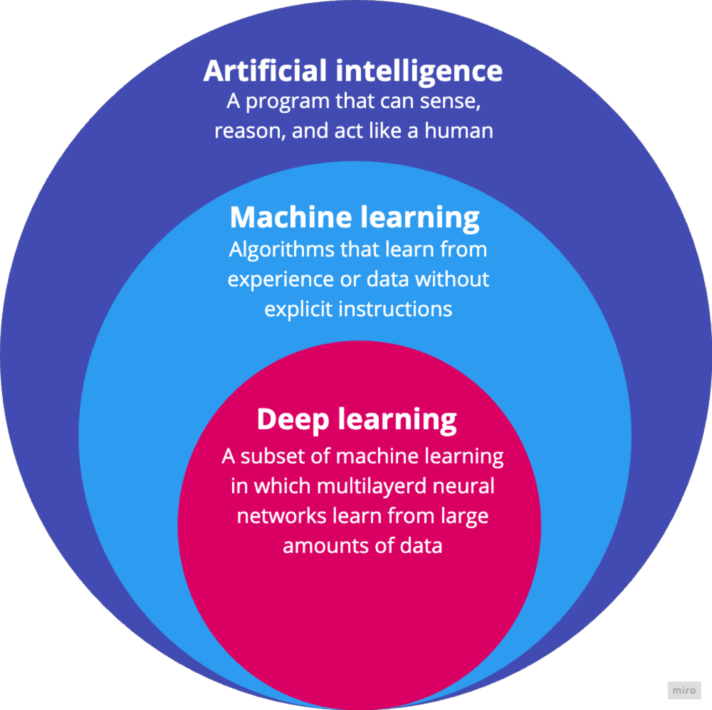
A diagram showing artificial intelligence as the broadest circle, machine learning as a subset inside it, and deep learning as a subset inside machine learning.¶
The useful thing about neural networks is that they are universal function approximators. In plain English, this means that a large enough neural network can learn to approximate almost any relationship between an input and an output, as long as we give it enough data and train it properly. The network may never learn the true underlying relationship, but it can learn a useful numerical approximation.
For example, if the input is an X-ray of the lungs and the output is a diagnosis, the network could learn a function which maps from image pixels to a class label (e.g. “healthy” or “diseased”). The task of mapping input data to a categorical label is known as classification - we’ll see an example of this in Session 2.
What is Generative AI?¶
Generative AI refers to any kind of AI that can learn the patterns in data well enough to create or complete new examples. The output may be text, an image, a protein molecule, or any other quantifiable object. State-of-the-art generative AI relies almost exclusively on complex neural networks - we’ll discuss some examples in the following sections.
By now, most people have heard of GenAI systems such as ChatGPT, Claude and Gemini, which can produce fluent text and images from prompts. These commercial systems often get a bad reputation because public examples can feel gimmicky, unreliable or disconnected from real-world needs.
However, the same ideas that let models generate text, images or video also underpin scientifically valuable models with real clinical and biological applications, such as exploring disease features, helping researchers reason about complex data, and predicting protein structures or behaviour. In this workshop, we’ll see how to adapt concepts from generative AI to further meaningful research.
Why Generative AI Matters for Life Science¶
Life-science data are often high-dimensional, noisy, expensive to collect and difficult to label. Generative models are useful because they can learn patterns from the data, which can then be used for reconstruction, simulation, and interpretation.
Some examples include:
Image restoration and inpainting: improving resolution, denoising microscopy or medical images, and filling in missing image regions while preserving plausible biological structure.
Protein structure prediction: models such as AlphaFold3 use deep learning to predict protein structures from amino acid sequence information, which offers new insights into protein function and interactions.
Drug discovery: generative models can propose candidate molecules, optimise molecular properties and help explore chemical spaces too large to search manually.

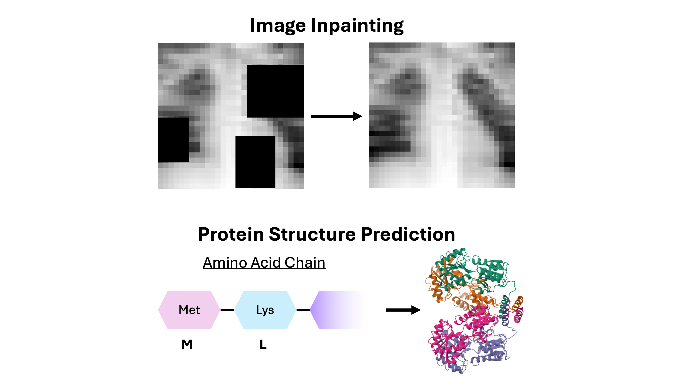
Applications of generative AI in life science.¶
Generative models are not automatically correct, but they can learn useful representations of biological variation and help researchers explore hypotheses that would otherwise be too large or expensive to test directly.
Types of Generative Models Used in Life Science¶
Several families of generative models appear repeatedly in life-science applications. We will not implement all of them in this workshop, but it is useful to know what they are and how they differ.
Autoencoders (AEs) learn to compress an input into a smaller representation (called a latent representation) and then reconstruct the original input. This forces the network to learn important features of the data. AEs are useful for denoising, dimensionality reduction, and learning interpretable latent spaces. In the first notebook, we’ll see how to implement a simple autoencoder and generate our own synthetic images.
Diffusion models generate clean data from noise. During training, real data are corrupted step by step with noise - the model then learns how to remove that noise. At generation time, the model starts from a pure noise distribution and reverses the “noising” steps back into a clean sample. Diffusion models are important in image generation and are increasingly used for molecular and protein design.
Large language models (LLMs) generate and reason over text, code and structured language-like data. Commercial models like ChatGPT and Claude are examples of LLMs. In biomedical settings, they can help with literature search, report drafting, and clinical evaluation. However, they require careful validation because fluent text is not the same as correct text.
Vision language models learn information from images, including microscopy, histopathology, and radiology data, then output a text description. State-of-the-art research in generative AI looks to creating “virtual doctors”, which can automatically describe symptoms, diagnoses and treatment options from images.
A Single Neuron¶
Warning
Maths Warning The following sections contain some mathematics, which I’m using here only for technical accuracy and completeness. Our main focus, however, isn’t in the theory behind deep learning, but in the applications to generative AI, so don’t worry if it doesn’t all make sense at first glance.
Neural networks are made up of computational units called neurons. State-of-the-art neural networks can contain millions, if not billions, of individual neurons. Each neuron is essentially a tiny calculator, which performs some simple multiplication and addition.
The input to a neural network is usually a list of numbers. These numbers could represent, for example, the RGB colour values of pixels in an image.
These numbers travel through neural networks via channels, which connect adjacent neurons. Each channel has an associated channel weight and each neuron has an associated bias. The weights and biases are just numbers, usually picked randomly at first, but the network adjusts them during training. We refer to the weights and biases collectively as the model parameters.
Each neuron will typically have multiple channels going out and multiple channels coming in. This means the neuron will take multiple inputs. Each input is multiplied by its corresponding channel weight, then all values are summed, and bias is added on top.
Finally, the total sum is put through an activation function. These are usually quite simple functions, which transform the sum in some way (you can find more information on activation functions in the sections below). This gives us our output, which can then be passed to the next neuron.

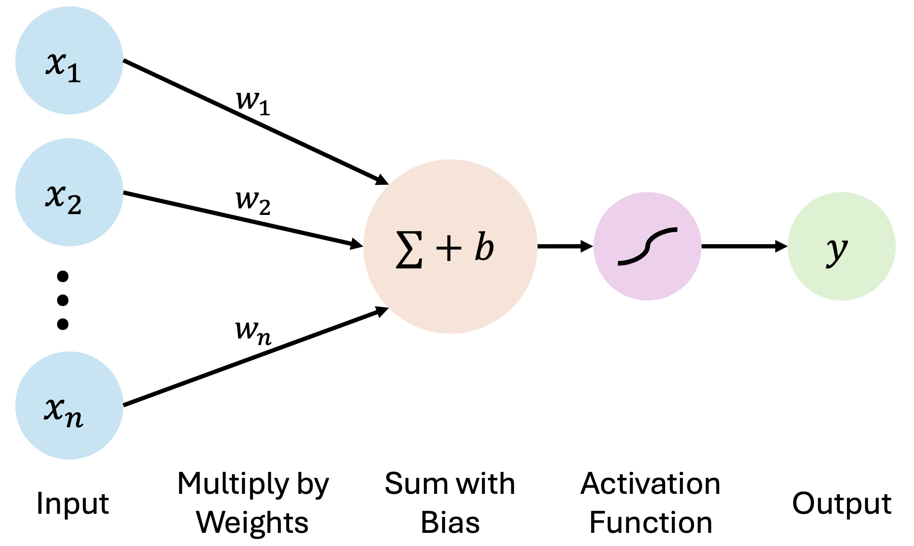
A schematic of a simple neural network. Inputs are multiplied by weights, a bias is added, and the result is passed through an activation function to produce an output.¶
To summarise, an artificial neuron takes numbers as inputs, multiplies them by learned weights, sums them, adds a bias, applies an activation function, and returns an output. We usually represent this in equation form as:
where:
\(y\) is the output of the neuron.
\(f\) is the activation function (you can find more information on activation functions below).
\(x_i\) is an input (neurons usually take multiple inputs, e.g. \(x_1\), \(x_2\), \(x_3\), …). The input to one neuron is usually the output of a previous neuron.
\(w_i\) is the weight associated with a channel (e.g. for inputs \(x_1\), \(x_2\), \(x_3\), we would have channel weights \(w_1\), \(w_2\), \(w_3\)).
\(b\) is the bias associated with the neuron.
Let’s imagine a very simple case: suppose I have a neural network with just one neuron, and I want my network to learn to multiply every number I give it by 2. Since I have just one neuron, I would have just one weight (\(w\)) and one bias (\(b\)). Then, I could pick an activation function which does absolutely nothing (just outputs whatever input it was given). Ideally, once the network is trained, I should end up with something like \(w = 2\) and \(b = 0\), so for any input \(x\), I get an output of $\( y = f(x \times w + b) = x \times w + b = 2 \times x \)$
That may not look impressive. It is just multiply, add, transform. But now imagine doing that not once, but millions or billions of times. Suddenly the network can learn very complex relationships.
Exercise
A neuron with weights \(w_1=0.5\), \(w_2=1.0\) and bias \(b=1\) receives inputs \(x_1=2\), \(x_2=3\). The neuron’s activation function is \(f(x) = x\). What is the neuron’s output?
Solution
First, we calculate the weighted sum inside the neuron \(0.5 * 2 + 1.0 * 3 + 1 = 5\). Passing this through the activation function gives us the output \(f(5) = 5\).
We could define a single neuron in Python like this:
# Define a single neuron
def neuron(inputs, weights, bias, activation):
# Multiply every input by its own channel weight, sum the results, then add the neuron's bias
total = (np.asarray(inputs) * np.asarray(weights)).sum() + bias
# Feed the total through the activation function to get the neuron's output
return activation(total)
# The identity activation function - returns whatever it was given
def identity(x):
return x
From Neurons to an MLP¶
Neurons are typically stacked in layers, as you can see in the figure below. A multilayer perceptron, or MLP, is the simplest kind of neural network we normally train. It is made from the following layers of neurons:
The input layer - Takes in the input data.
The hidden layers - Sit between the input and output. These layers learn intermediate representations of the data.
The output layer - Produces the final output.
MLPs are usually made up of fully-connected layers - this means every neuron in one layer is connected to every neuron in the next layer. Each connection (channel) has a weight, and each neuron has a bias. Training is the process of finding useful values for all of those weights and biases.

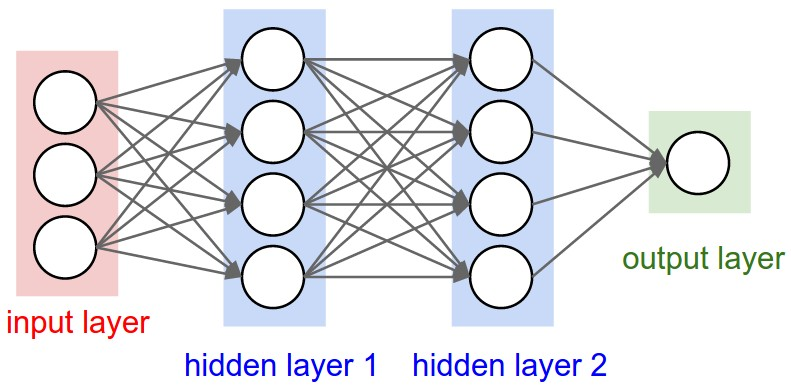
A simple multilayer perceptron with an input layer, hidden layers and an output layer. Image source.¶
Exercise
In an MLP, a fully-connected layer maps 3 inputs to 4 neurons. How many trainable parameters does that layer have?
Solution
There are \(3 * 4 = 12\) weights (one for each channel) and \(4\) biases (one for each neuron). This gives \(16\) parameters altogether.
This is what a simple MLP written in PyTorch looks like:
# Building a small MLP
# We can use the nn.Sequential container from PyTorch to apply each layer in the order we list them
# Each call to nn.Linear adds a new, fully-connected layer to the network
# We can also add an activation function after each layer
mlp = nn.Sequential(
# Input layer to first hidden layer (3 inputs -> 5 neurons)
nn.Linear(3, 5),
# Activation function, applied to every neuron in the hidden layer
nn.ReLU(),
# First hidden layer to second hidden layer (5 inputs -> 5 neurons)
nn.Linear(5, 5),
# Another activation function
nn.ReLU(),
# Second hidden layer to output layer (5 inputs -> 2 neurons)
nn.Linear(5, 2),
)
Activation Functions¶
Activation functions are what stop a neural network from creating just one big linear equation. They introduce non-linearity, which lets the network learn curved, irregular and highly complicated relationships.
Here is an example of two common activation functions:
ReLU, short for Rectified Linear Unit, returns zero for negative values and returns the input itself for positive values: \(f(x)=max(0,x)\).
Sigmoid squashes values into the range 0 to 1: \(f(x)=1/(1+e^{-x})\). This is good for the output layer, which may need to return binary values or probabilities, or for ensuring neuron outputs stay within a fixed range.

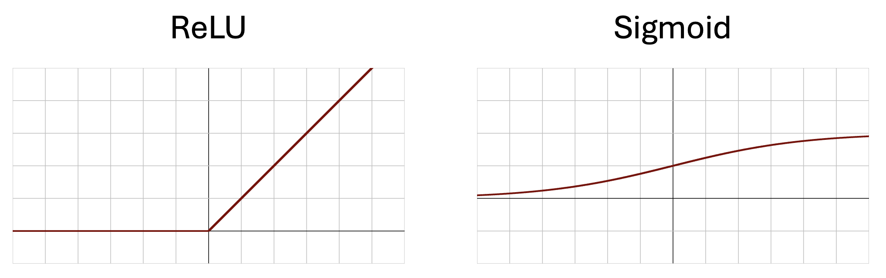
The ReLU and sigmoid activation functions.¶
Without activation functions, adding more layers would not really help. A stack of linear transformations is still just another linear transformation. ReLU, sigmoid and other activation functions let networks build non-linear curves, boundaries and representations.
In the first notebook, we’ll see the effect first-hand of adding activation functions to a neural network.
How Neural Networks Learn¶
Training means finding the model parameters (the weights and biases) that make the model’s output as close as possible to what we want. This means we need a training dataset, for which we have known input-output pairs.
Going back to our simple one-neuron example, the training dataset could contain the pairs $\((x=1, y=2), (x=3, y=6), (x=124, y=248), etc.\)$ The amount of training data you need depends heavily on the model you use, but is usually in the order of 100s to 1000s of data points.
We measure “how wrong” the model is with a loss function and gradually update the model’s parameters to minimise this loss function. To do this, we must first pass our input training data through the network to get an output - this process is known as the forward pass.
The model does not know what a “good” output means, it only knows the loss we define. Typically, the loss function cannot take a negative value and has a minimum value at 0, which represents a perfect performance on the training data.
Going back to our simple one-neuron example, the loss function could be the squared error between the expected output and the output the model gave us. So, if I input the number \(1\), then my expected output is \(2\). Let’s say I perform a forward pass, but the model outputs \(3\). Then my loss is \((3-2)^{2} = 1\). This is obviously not \(0\), so my model still has some learning to do.
Once we have a loss, we need an optimiser. Optimisation is the process of adjusting the model parameters to reduce the loss. The basic idea is to work out the effect that changing the parameter (e.g. weight or bias) will have on the loss. In mathematical terms, we call this the gradient of the loss with respect to the parameters. The process of calculating the gradient of the loss with respect to the model parameters is called backpropagation.
We use a process called gradient descent to determine which direction makes the loss go up, then push the parameters in the opposite direction (i.e. to make the loss go down).
For example, in my single-neuron network, the weight of my single channel could be \(3\) and the bias could be \(0\). I can easily work out that increasing the weight will make my output larger, pushing it further away from the expected output of \(2\) (for an input of \(1\)). So, I need to make the weight smaller to make the loss smaller.
The optimiser’s learning rate controls the size of each update step. If the learning rate is too small, training may be painfully slow. If it is too large, the model may jump over good solutions and become unstable.
Adam (adaptive moment estimation) is a very popular optimiser because it takes account of how each parameter has changed over time. We won’t go into too much detail here, but it’s a strong default for many neural networks.
A batch is a small group of training data processed together. Instead of calculating the loss over the entire training set before every update, we calculate it over one batch at a time. This is faster and reduces the amount of RAM (random access memory) your computer needs to use during training. One full pass through all batches in the training data is called an epoch.

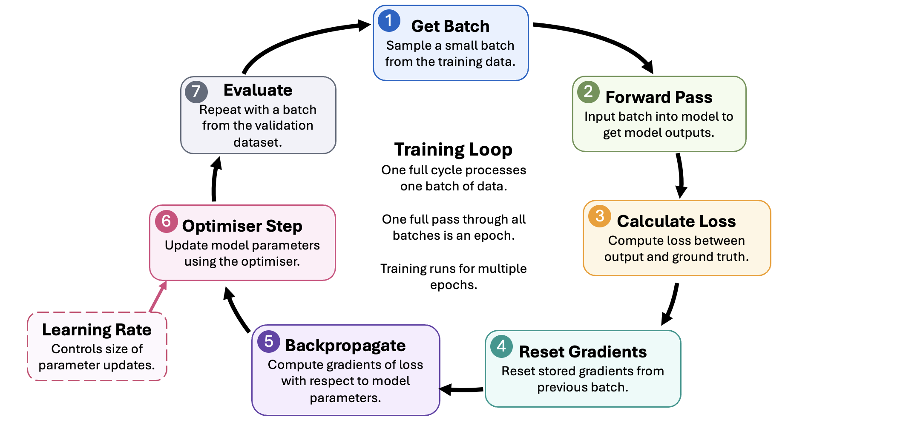
The basic neural network training loop: take a batch, run a forward pass, calculate the loss, backpropagate gradients, update weights with an optimiser such as Adam, then repeat. You’ll notice there’s a seventh step, “Evaluate” - we’ll discuss that in the next section.¶
Exercise
Which of these do we learn during training and which do we choose ourselves?
Number of channels.
Channel weights.
Biases.
Learning rate.
Batch size.
Number of layers.
Solution
We choose the number of channels, learning rate, batch size and number of layers ourselves. The only learnable parameters are the weights and biases.
Train, Validation and Test Sets¶
During training, our model learns how to map the input data we provide to the expected output. However, this does not guarantee the model is learning a relationship between the input and output. A sufficiently complex model might just memorise every possible input and output pair, and completely fail on new data. This phenomenon is known as overfitting.
To mitigate this, we split our data into the following subsets:
The training set - This data is used to actually update the model parameters.
The validation set - This data is used during training to check whether the model is improving on unseen data. We usually pass this data through the model at the end of every epoch and record the loss. Note that this data is never used to update the model parameters.
The test set - This data is kept untouched until the end, giving the cleanest estimate of final performance.
If the training loss keeps decreasing but the validation loss increases, the model may be overfitting. It has learned the training examples too specifically and is no longer generalising well.
Discussion
Why do we use a test set if we already have a validation set that the model never trains on?
Solution
We use the validation loss to make decisions (when to stop training, which architecture to use), so the validation set can bias our choices. That means validation loss becomes an optimistic estimate of model performance on unseen data. The untouched test set gives the honest estimate of performance on genuinely unseen data.
A Quick Word on Tensors¶
Before a neural network can learn anything, we need somewhere to put the data. Deep learning libraries, like PyTorch, store data in tensors.
A tensor is just a container of numbers arranged in a grid. The dimension of a tensor controls how the numbers are organised:
1 dimension - a list of numbers (a vector).
2 dimensions - a table of numbers (a matrix).
3+ dimensions - a higher-dimensional array (like a stack of matrices)
We describe a tensor by its shape, which is simply the size along each dimension. By convention, the first dimension in a tensor represents the batch number. For example, the tensor \([a,b,c]\) has dimension 1 (its a vector) and shape \(3\) (or \((1, 3)\) if we consider this to be a batch containing 1 vector).
There are two main reasons why we use tensors:
Speed. CPUs and GPUs are designed to work with grid-like data. We can multiply, add or transform every number in a tensor in one operation, rather than looping over them one at a time. This makes calculation much faster.
Gradients. PyTorch quietly tracks the graph of computations that led to each tensor’s calculation (which makes backpropagation much easier). Without this, we would have to differentiate the loss by hand for every parameter in the network.
A Word on Computation¶
Training a large neural network can require billions, if not trillions of parameter updates, which each require several multiplication and addition calculations of their own. As you can probably guess, this might take a very long time.
Computers typically have their own processing units, which are responsible for performing these calculations. Traditionally, abstract calculations and data processing were performed on central processing units (CPUs). CPUs are designed to handle large, complex tasks, rather than perform several small operations in parallel.
As such, training large models efficiently usually requires graphics processing units (GPUs). A GPU can perform many numerical operations in parallel, which is exactly what deep-learning workloads need. CUDA is NVIDIA’s computing platform for running general-purpose computations on NVIDIA GPUs. In practice, frameworks such as PyTorch use CUDA behind the scenes so that tensor operations, backpropagation and optimisation can run much faster than on a CPU. So, if you see “CUDA” written anywhere in the notebooks, that’s just us telling the program to run calculations on the GPU rather than CPU.
Overview of the First Notebook¶
In the first notebook, we’ll put the fundamental concepts we’ve introduced into practice. Working through the notebook, we will:
Set up our Python environment.
Explicitly define a single neuron.
Stack neurons into a multilayer perceptron (MLP).
Test a simple network with and without activation functions.
Train a network on a simple task.
Split data into training, validation and test sets, and force a model to overfit.
2. Interpretable Autoencoders for Image Classification¶
Objectives
Describe autoencoder architecture and how it compresses images into latent representations
Train an autoencoder on the PneumoniaMNIST dataset to reconstruct and generate synthetic X-rays
Classify images directly from their latent vectors, assessing performance with accuracy and confusion matrices
Interpret the latent space to connect model representations to meaningful image features
The following notes support Session2_Autoencoder_PneumoniaMNIST_Workshop.ipynb.
A Clinical Application¶
In Session 1, we explored some of the fundamental concepts behind deep learning and generative AI. In this session, we’ll put those ideas towards a simple clinical application and build our first generative model.
We’re going to be using the an X-ray image dataset called PneumoniaMNIST, which contains images from two classes:
Class 1: healthy patients.
Class 2: patients with pneumonia.
Our aim is to create an autoencoder, which we will then use to:
Generate new images.
Predict whether a given image represents a healthy or diseased patient.
Identify which visual or morphological features change between healthy patients and patients with disease.
Images as Tensors¶
Image data is one of the most common and easily-accessible data types in the life sciences.
An image, fundamentally, is just a grid of numbers (usually a matrix, or a stack of matrices). In a greyscale image, each number represents pixel brightness. In a colour image, we usually have three grids stacked together: red, green and blue channels.
We can represent images as tensors. For example, a 256 by 256 pixel greyscale image can be represented as a 2D tensor of 256 by 256 numbers, with each number defined between 0 and 1 (where 0 is total darkness and 1 is absolute brightness).

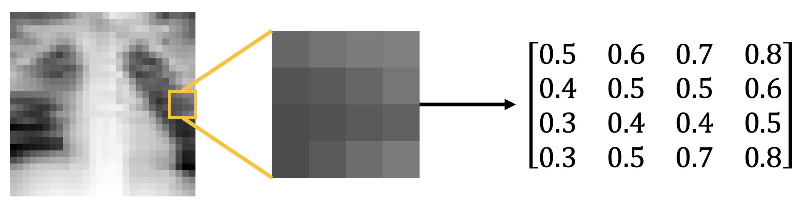
Images represented as arrays and tensors. A greyscale image can be represented as a matrix or tensor of numbers, with pixel brightness intensities defined between 0 and 1. In this figure, we extract a \(4 \times 4\) pixel segment of the image and view its matrix representation (to 1 decimal place).¶
PneumoniaMNIST is part of the MedMNIST dataset and contains images of chest X-rays on patients with and without pneumonia. In PneumoniaMNIST, each image is 28 by 28 pixels with one greyscale channel.

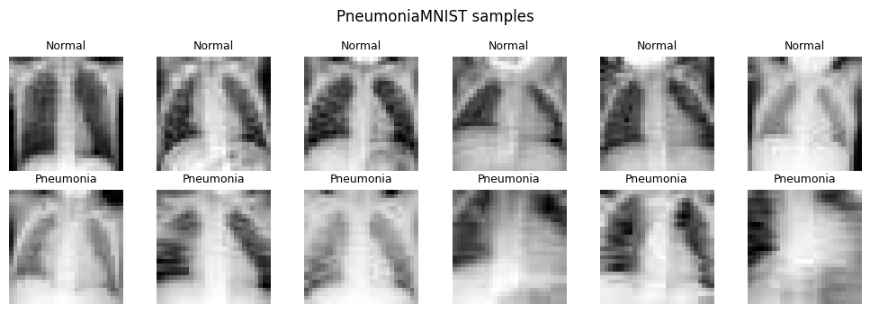
A 2 by 6 grid of example PneumoniaMNIST X-rays. The top row shows healthy patients (classified here as “Normal”) and the bottom row shows patients with pneumonia (classified here as “Pneumonia”). In X-rays, pneumonia manifests as cloudier white patches.¶
Note
Always look at the data Before training anything, it’s best practice to visualise your data. In PneumoniaMNIST, normal lungs tend to appear darker and clearer, while pneumonia often appears as hazier or whiter regions. The model will only learn from the pixel patterns it sees, so we need to know what those patterns look like.
What is an Autoencoder?¶
As we discussed in the last session, an autoencoder (AE) is a type of neural network that learns to compress an input into a smaller representation and then reconstruct the original input. This forces the network to learn only the most important features of the data. The compressed representation is called the latent representation, and the space of all possible latent representations is the latent space.
In practice, an AE is made up of two halves:
An encoder - which compresses the input into a latent representation.
A decoder - which reconstructs the input from that representation.
In the next notebook, we’ll learn to compress our PneumoniaMNIST images into the latent space and then reconstruct them. The input image has \(28 \times 28 = 784\) pixel values, while the latent representation has only 2 values. This means the model is forced to squeeze the image through a tiny bottleneck, then reconstruct it. If it succeeds, those two numbers must carry useful information about the original X-ray.
In this case, our encoder and decoder will be built from fully-connected layers.

A diagram of an autoencoder. On the left, a 28 by 2 pixel X-ray enters the encoder. In the middle, it is compressed into a 2D latent vector. On the right, the decoder reconstructs the X-ray.¶
This is what our autoencoder looks like in PyTorch:
# Here's where we define the autoencoder using PyTorch
# We use the subclass nn.Module to let Python know we're defining a new neural network
class SimpleAutoencoder(nn.Module):
"""One-block fully-connected autoencoder with a 2D latent space."""
# These scary lines of code basically just set some important default numbers the network needs to remember,
# e.g. the size of the input image, the size of the hidden layer, and the size of the latent space.
def __init__(self, input_dim: int = 28 * 28, hidden_dim: int = 128, latent_dim: int = 2):
super().__init__()
# Store the size of our input image. Our network requires a vector input, so instead of passing an entire
# 28 by 28 pixel image, we pass a flattened vector of 28*28 pixels.
self.input_dim = input_dim
# Here we define the encoder layers
self.encoder = nn.Sequential(
# Project the flattened image down to the hidden width
nn.Linear(input_dim, hidden_dim),
# Use a ReLU activation function between layers (we set inplace=True to save memory)
nn.ReLU(inplace=True),
# Project hidden representation down to the 2D latent space
nn.Linear(hidden_dim, latent_dim),
)
# And here are the decoder layers
self.decoder = nn.Sequential(
# Expand the latent vector back up to the hidden width
nn.Linear(latent_dim, hidden_dim),
# Use a ReLU activation function between layers
nn.ReLU(inplace=True),
# Project hidden representation back up to pixel space (original image size)
nn.Linear(hidden_dim, input_dim),
# Use a sigmoid activation function to map pixels back to [0, 1] range
nn.Sigmoid(),
)
# This function encodes the input image into a 2D latent space by calling the encoder layers
def encode(self, x):
# Flatten image batch from (N,1,28,28) to (N,784), then run through the encoder
return self.encoder(x.view(x.size(0), -1))
# This function decodes the latent space back into an image by calling the decoder layers
def decode(self, z):
# Run the latent through the decoder and reshape back to image dimensions
return self.decoder(z).view(-1, 1, 28, 28)
# This function puts the encoder and decoder together and returns the encoded image and the latent space
def forward(self, x):
# Encode the input batch into a latent vector (here, z represents two numbers)
z = self.encode(x)
# Decode the latent vector back into a reconstructed image (x_hat is our reconstruction)
x_hat = self.decode(z)
# Return both reconstruction and latent representation
return x_hat, z
The model output is a reconstructed image, and the target is the original image. We need a loss term which compares how closely our output matches our input - here, we can again use the mean squared error (MSE). To calculate this, we subtract the value of each pixel in the reconstruction (\(\hat{y}_i\)) from the same pixel in the original image \(y_i\), square it (multiply it by itself), and average the value over all pixels. Mathematically, this is given by the following formula (where \(n\) is the total number of pixels):
For these images, you can think of this as comparing every pixel in the original X-ray with the corresponding pixel in the reconstruction. The closer the pixel values are, the lower the MSE. A perfect reconstruction would have an MSE equal to zero. You can see some example images and their reconstructions below.

Example original X-rays and their autoencoder reconstructions. This lets us compare the model’s pixel-level reconstruction quality with the structure visible in the original images.¶
Exercise
Take a \(2 \times 2\) “image” with true pixel values \([[1.0, 0.0], [0.0, 1.0]]\) and a reconstruction \([[0.8, 0.1], [0.2, 0.9]]\). What is the MSE?
Solution
Errors for each pixel are 0.2, 0.1, 0.2, 0.1. Squared they are 0.04, 0.01, 0.04, 0.01, summing to 0.10. Dividing by \(n=4\) pixels gives MSE = 0.025.
Latent Spaces¶
Many neural networks do not only produce final predictions. Inside the model, they build intermediate representations of the input. A latent representation is one of these compressed internal descriptions, and a latent space is the coordinate system formed by all possible latent representations.
The latent space is where the model organises what it has learned. If two X-rays are visually similar, their latent representations should lie close to each other in the latent space. If pneumonia creates consistent image features, those features may appear as clusters in the latent space.
You can think of the latent representation as a compressed coordinate system. Instead of describing an X-ray with 784 pixel values, the autoencoder tries to describe it with just two values. Those two values will not have obvious meanings at first, but by plotting them and decoding points from the space, we can start to probe what they represent.
In the following notebook, we’ll compress our entire test image dataset into the 2D latent space below. Every blue point you see here represents a “normal” chest X-ray, and every red point represents a “pneumonia” chest X-ray. Despite not telling our model anything about the image classes, it seems our autoencoder has learned to partially separate the classes in the latent space. This suggests that we’re encoding image features which contain important information relevant to the image class.

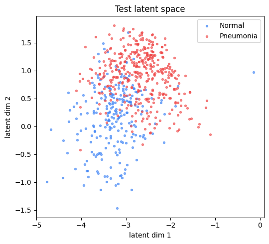
A scatter plot of the 2D latent space. Each point is one test X-ray, coloured by class label, showing normal and pneumonia samples occupying different regions.¶
Classifying Directly from the Latent Space¶
Once the latent space is structured, we can train a classifier on the latent vectors.
The classifier in the notebook is a small MLP. It takes the two latent values as input and predicts whether an image belongs to the “normal” class or the “pneumonia” class.
In the code, our classifier looks something like this:
# Here, we create a small MLP that classifies latent vectors as "Normal" or "Pneumonia"
# This is just another neural network, with some simple fully-connected layers.
class LatentMLP(nn.Module):
# Define the important variables (latent dimension, hidden dimension, number of classes)
def __init__(self, latent_dim, hidden=32, n_classes=2):
super().__init__()
# This is a two-layer MLP with dropout
self.net = nn.Sequential(
nn.Linear(latent_dim, hidden),
nn.ReLU(inplace=True),
nn.Dropout(0.2),
nn.Linear(hidden, n_classes),
)
# Forward pass returns the logits for each class
def forward(self, z):
return self.net(z)
You’ll notice that we include a Dropout layer here - this isn’t a different layer type, it just randomly switches off 20% of the neurons from the previous layer. This may seem counter-intuitive, but it actually helps the network generalise.
Ultimately, the network outputs a logit for each class - this is basically a score which represents how much the latent vector seems to belong to each class.
Logits are unbounded, meaning they can theoretically be arbitrarily large. To account for this, we typically apply a softmax function, which essentially converts all logits into a probability distribution. The formula for softmax is
where \(p_i\) is the probability of picking class \(i\) - this is equivalent to the exponent of the \(i^{th}\) logit divided by the sum of the exponents of all logits. All you really need to know is that this maps every logit to a value between 0 and 1 (with 0 being 0% chance and 1 being 100% chance).
This tells us what the probability of the latent vector belonging to each class is. Typically, we take the class with highest probability to be the model’s prediction.
Since the classifier MLP is also a neural network, it requires its own loss term. For this, we use cross-entropy loss. This loss is minimised when the MLP correctly predicts the true class of every latent vector with 100% certainty.
Discussion
Why do we train the latent classifier after the autoencoder has finished training rather than at the same time?
Solution
The classifier learns a mapping from the latent space, so that space needs to be fixed. If it were still moving (as it does during training), the classifier would be chasing a moving target.
We can get an estimate of how well our classifier is performing using the accuracy. This represents the percentage of correct predictions made by the model.
However, since biological datasets can be imbalanced, accuracy alone can be misleading. If one class is much larger, a model can get decent accuracy by mostly predicting the majority class. Just to be sure, we’ll also plot a confusion matrix, which shows us the number of images in each class and their predicted labels.

A confusion matrix for classification from latent vectors, showing true positives, false positives, true negatives and false negatives.¶
Discussion
A test set has 900 normal and 100 pneumonia X-rays. A trained model always predicts “normal” for every image. Why might this happen? What is this model’s accuracy?
Solution
Why might this happen? - It could be because the training set was heavily imbalanced, with very few pneumonia cases. The model learns that the easiest way to ensure high accuracy is to treat all images as “normal”.
What is this model’s accuracy? - 90%. It misses every single pneumonia case while looking great on accuracy. A confusion matrix helps to expose this issue.
From Reconstruction to Generation¶
Once the autoencoder is trained, the decoder acts as a function from latent coordinates to images. That means we can make up latent vectors and ask the decoder to turn them into X-rays. By doing this, we’re generating entirely synthetic images - this is a primitive version of how modern AI image generators work.
At the end of the notebook, we’ll create a grid of entirely synthetic X-rays, sampled at various points across the latent space. Some of these X-rays seem realistic, others just look like noise, but none of them are actually real.

A grid of decoded synthetic X-rays across the 2D latent plane.¶
Interpreting the Latent Space¶
You may have heard neural networks described as “black box” approaches - this means we don’t really have an intuitive understanding of what the model is learning. Indeed, when our model is made up of billions of different weight and bias parameters, it becomes difficult to discern what any of them actually mean. In life science, this can be problematic, because we usually want to understand why a model produced a certain output, especially when that output may influence clinical or biological decisions.
For this reason, we may use methods from interpretable AI. The latent space gives us one route to interpretation - if the latent representation corresponds to a visible feature such as object size, texture, brightness, or morphology, then we can begin to connect the model’s internal representation to real biological features. This is not the same as proof, but it gives us an intuition of which image features actually matter, and could be used for hypothesis generation.
In the plot below, you can see our grid of synthetic lungs overlaid with the latent space. We can see that images generated near the space where pneumonia X-rays are encoded share similar image features (namely, they are much hazier and show larger white patches). This is inline with what we already know about how pneumonia manifests in X-rays.

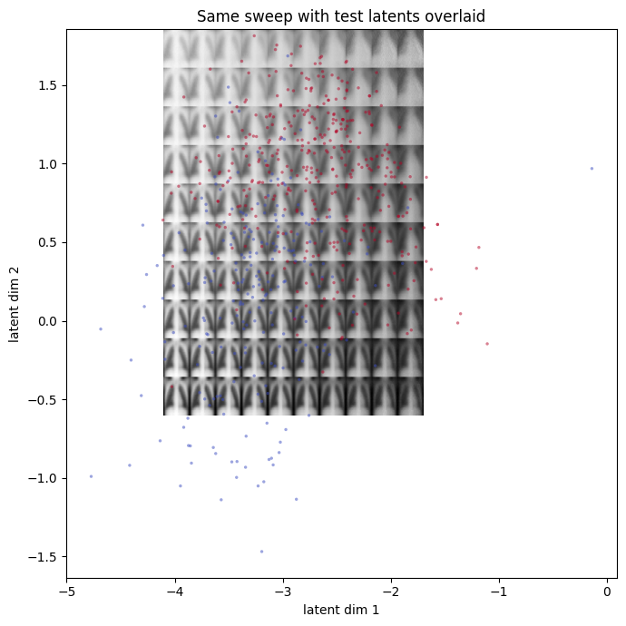
Our grid of decoded synthetic X-rays, overlaid with the test latent space.¶
Overview of the Next Notebook¶
In the next notebook, we’ll put these ideas into code. The current notebook uses PneumoniaMNIST chest X-ray images, but you could theoretically use any binary-class image dataset (as long as you adjust the input size accordingly). We’ll load image data, convert the images to tensors, train a compact autoencoder and inspect what the latent space has learned.
By the end of the practical, the model compresses each 28 by 28 image into just two numbers, then reconstructs the image from those two numbers alone.
Working through the notebook, we will:
Set up the environment.
Download the dataset.
Train a simple autoencoder.
Investigate the test latent space.
Build an MLP to classify images from the latent space.
Feed the decoder made-up latent vectors and see what it generates.
3. Protein Language Models¶
Objectives
Explain how transformers and attention mechanisms process amino acid sequences as biological language
Tokenise protein sequences and extract per-residue ESM2 embeddings for downstream tasks
Train a classifier on pooled protein embeddings to predict solubility of E. coli proteins
Visualise high-dimensional embeddings with t-SNE to reveal class structure
These notes support Session3_Protein_Language_Models_Workshop.ipynb.
Recap of Session 2¶
In the previous session, we built a plain autoencoder for encoding and decoding image data. The encoder compressed each image into a 2-dimensional latent representation, and the decoder then tried to reconstruct the original image from those two numbers alone.
Once the decoder has learned to map latent coordinates back to images, we can sample a fake latent representation, pass it through the decoder and generate a synthetic image. This is a primitive version of how many image-generation models work: learn a useful latent or noise space, then decode points from that space into plausible data.
By performing a latent space traversal, we could identify which image features may correspond with pneumonia. The key idea was that generative models are not only for making synthetic examples. They can also help us learn compact, interpretable representations for prediction and hypothesis generation.
From Image Data to Sequence Data¶
So far, we have only worked with toy data and images, but commercial generative AI relies on a very different data type: sequences - specifically, sequences of text. Models like ChatGPT and Claude are designed to take in sequences of text data and output more text data as an answer, typically in such a way that provides a realistic response to the input.
In this session, we’ll also move to sequence data - but we’ll see examples which are more biologically-relevant: proteins. A protein is made up of a chain of amino acids, and we can treat that chain as a kind of biological language.
Sequence data is first broken into tokens - these are small pieces of the data. In text, a model receives tokens such as words, subwords or characters. In proteins, each amino acid might be a token.
We’ll use a model called Evolutionary Scale Modelling-2 (ESM2), a pre-trained protein language model which converts amino acid sequences into numerical representations called embeddings - kind of like how our autoencoder converts images into a latent representation. We then train a small classifier to predict a whether or not the given amino acid sequence is soluble.
Proteins as Biological Language¶
There are 20 standard amino acids, commonly represented with one-letter codes such as A for alanine, G for glycine and W for tryptophan. Since each amino acid can be represented by a letter, a protein sequence can be represented as a string:
MKPVTLYDVAEYAGVSYQTVSRVVNQHISENKASRA…
The same deep-learning ideas used for text can be adapted to biological sequences. This applies beyond proteins too. Similar logic appears in genomics, transcriptomics and any domain where biological information is stored in ordered strings.

E. coli lac repressor protein. Proteins are usually visualised through ribbon diagrams (left). Each protein is composed of amino acid chains (top right), which are sequences of amino acid molecules. These sequences can be recorded in string or text format (bottom right).¶
Transformers¶
ESM2 is a transformer-based model. A transformer is a type of neural network designed to process sequences.
Traditional sequence models, such as recurrent neural networks, processed tokens one after another. This made it harder for the model to preserve information across long sequences. Transformers overcome this problem with attention mechanisms, which lets the model compare between all positions in the sequence in a way that is computationally-efficient.
Fundamentally, attention is just another form of matrix multiplication which is very effective at recognising both local and global relationships between elements in the sequence. In a sentence, attention can connect a pronoun to the noun it refers to. For a protein, attention can connect amino acids that are far apart in sequence but important for the same structure or function.
A transformer first converts each token into an embedding and adds information about its position in the sequence. The attention layers then calculate how strongly each token “relates” to every other token and combine information from the most relevant positions. If you’d like to learn more about attention mechanisms in transformers, I would recommend this video.
What are Protein Language Models?¶
Protein language models adapt transformer ideas from natural language processing to amino acid sequences. The details differ between models, but they usually learn by predicting masked amino acids or predicting the next amino acid in an incomplete sequence.
Protein language models are typically used for:
Regression of protein properties: Predict continuous properties such as stability or binding affinity.
Classification: Predict discrete labels such as functional class or subcellular localisation.
Protein design: Generate or rank candidate sequences with desired biochemical properties.
Protein structure prediction: Use sequence representations to help infer sequence context and ultimately generate 3D structure.
Clinical applications include drug discovery, antibody design, enzyme optimisation, and prioritising candidate proteins for experimental screening.
ESM2 is a pre-trained protein language model - this means it was already trained on many protein sequences, with the task of predicting missing or masked amino acids in a given sequence. In order to do this, the model has to learn contextual embeddings for each amino acid. These embeddings can then be used for downstream tasks through feature extraction.
In machine learning, the term for re-using a pre-trained model on a separate task is called transfer learning. In our case, we’re using a specific form of transfer learning called feature extraction, where we take the output of one network (ESM2) as input to another.
FASTA and Biological Identifiers¶
Protein sequences are commonly accessed through databases such as UniProt, which provides curated protein sequences, annotations, identifiers, organism information, functional descriptions and links to other biological resources.
Protein sequence data is often stored in FASTA format. A FASTA file has a header line, starting with >, followed by sequence metadata, with the sequence itself just underneath. For example:
>sp|P0A7V8|RS4_ECOLI 30S ribosomal protein S4 OS=Escherichia coli
MARIAGINIPDHKHPIIVVNDTLTERLKK...
In the next notebook, we’ll be classifying proteins from the bacterium E. coli into one of two classes: soluble or insoluble. We’ll download the sequence data directly from UniProt in FASTA format.
Tokenisation¶
For a protein language model, tokens are usually amino acid letters plus special tokens for padding, sequence start, sequence end or masking. Tokenised data is usually represented as a sequence of numbers, for example, I may assign the integers 1, 2 and 3 to the amino acids A, G and W. This would convert the amino acid sequence AWGWAG into the sequence of numbers \([1, 3, 2, 3, 1, 2]\).
The input layer of a neural network is of fixed size, which means that each model has a maximum input size. We usually make this much larger than necessary and fill in the empty space with special pad tokens. Padding is important because batches need tensors with consistent shapes. If one protein has 80 residues and another has 500, we pad the shorter one so the batch can be stacked.
ESM2 also has a maximum context length of 1024 - this means we can only process proteins with at most 1022 amino acids (excluding start and stop tokens). In the notebook, sequences which are longer than the context length are truncated - this is fine for the purpose of demonstration, but in practice we’d use a model with a larger context window.
In the plot below, you can see how the class distribution varies with sequence length and amino acid frequency over our E. coli data. The red line marks the context window of ESM-2, so any amino acid beyond this point is truncated.

Sequence length distributions for the protein dataset, including the ESM2 context limit. This shows how many proteins fit directly into the model and where truncation begins to matter.¶
In the notebook, we’ll use ESM2’s built-in tokeniser. Here’s an example of what tokenising the gene yaaX looks like.
# Import ESM
import esm
# Grab the sequence of yaaX - here, "gene_to_sequence" is a mapping from the gene name to its amino acid sequence
test_seq = gene_to_sequence['yaaX']
# Here, alphabet is ESM's built-in tokeniser - it converts amino acids to numbers
model, alphabet = esm.pretrained.esm2_t12_35M_UR50D()
# Get our tokens out: get_batch_converter() returns a callable, which we then call with the batch
batch_converter = alphabet.get_batch_converter()
# Convert our test sequence into a tensor of numeric tokens (we include the string "test" here because batch_converter expects a label)
_, _, tokens = batch_converter([('test', test_seq)])
print(f"Shape of token vector: {tokens.shape}")
print(f"Tokens: {tokens}")
# Print the tokens - there are 98 residues in this sequence, so we get 98 tokens + 2 for start and end tokens
Shape of token vector: torch.Size([1, 100])
Tokens: tensor([[ 0, 20, 15, 15, 20, 16, 8, 12, 7, 4, 5, 4, 8, 4, 7, 4, 7, 5,
14, 20, 5, 5, 16, 5, 5, 9, 12, 11, 4, 7, 14, 8, 7, 15, 4, 16,
12, 6, 13, 10, 13, 17, 10, 6, 19, 19, 22, 13, 6, 6, 21, 22, 10, 13,
21, 6, 22, 22, 15, 16, 21, 19, 9, 22, 10, 6, 17, 10, 22, 21, 4, 21,
6, 14, 14, 14, 14, 14, 10, 21, 21, 15, 15, 5, 14, 21, 13, 21, 21, 6,
6, 21, 6, 14, 6, 15, 21, 21, 10, 2]])
After tokenisation, the model also needs a way to know where each amino acid appears in the sequence. Transformer models therefore add positional information. Some models use learned positional embeddings, where each position also gets its own embedding. In the notebook, ESM-2 takes account of this automatically. We’ll learn more about positional embeddings in Session 4.
Embeddings¶
An embedding is a numerical representation of a token or sequence which is learned by the model. For protein language models, each amino acid token becomes a vector. Instead of representing alanine as just A or a single integer, the model represents it as hundreds of numbers that encode what it has learned about alanine in the sequence context.
The values in the embedding depend on the token itself, its position in the sequence, and its learned relationship with other tokens in the sequence.
Let’s take our example of the gene yaaX and embed it:
# Import PyTorch to use the model
import torch
# Set device, we'll use CPU for simplicity
device = "cpu"
# Let's put the model in evaluation mode, since we aren't training
model = model.to(device).eval()
# Turn off autograd
with torch.no_grad():
# Run ESM2 and ask it to return the activations from the final layer (layer 12)
out = model(tokens.to(device), repr_layers=[12])
# Slice out the per-residue features, ignoring the start/end tokens
per_residue = out['representations'][12][0, 1:len(test_seq)+1]
# Print the shape of the embedding - 98 residues, 480 dimensions
print(f"Shape of embedding vector: {per_residue.shape}")
# Print the first residue's embedding - total nonsense to you and me, but very informative to a computer
print(f"First residue's embedding: {per_residue[0]}")
Shape of embedding vector: torch.Size([98, 480])
First residue's embedding: tensor([-0.4646, -0.0841, -0.4610, 1.0782, 0.0641, 0.6295, -0.6128, -0.2486,
0.1890, 0.0380, 0.0659, -0.2056, 0.6324, 0.3972, 0.0196, 0.2712,
0.3757, -0.1252, -0.2027, 0.3060, 0.5739, 0.1633, 0.4924, 0.2532,
0.1815, 0.0940, 0.2281, 0.0185, 0.0910, -0.0648, -0.1777, -0.1487,
-0.1957, -0.1399, 0.1900, -0.1346, 0.2999, 0.5514, 0.0151, -0.2056,
0.0989, -0.1515, 0.2039, -0.0189, -0.0779, -0.2880, 3.2604, -0.0529,
0.0190, -0.1259, -0.1437, 0.1137, -0.2329, -0.2209, 0.7912, -0.0659,
-0.4655, 0.4740, -0.1308, 0.0656, -0.2505, 0.3856, 0.1642, -0.1358,
-0.4534, -0.0281, 0.0931, 1.3549, -0.1039, -0.2717, -0.3297, 0.4221,
0.5507, -0.1143, -0.0274, 0.2313, -0.2394, -0.3397, -0.0679, 0.0518,
-0.4177, 0.1395, -0.0789, -0.5254, -0.4698, 0.3896, -0.0812, -0.1291,
0.0917, 0.4713, 0.4210, 0.1720, -0.3084, -0.0209, -0.1416, -0.1696,
-0.4613, 0.3837, 0.1994, 0.2933, 0.0112, -0.2773, -0.3507, -0.2033,
0.0896, 0.0306, 0.8030, 0.5707, -0.1570, 0.2573, -0.3110, 0.1959,
0.0894, -0.0173, -0.1128, -0.4319, -0.1277, -0.0948, 0.1615, -0.1806,
0.3106, 0.0556, 0.6020, 0.2232, -0.5044, 0.2405, -0.1008, 0.1601,
0.6195, 0.0818, -0.7296, -0.1366, 0.5512, 0.2645, -0.5792, 0.4861,
...
0.2016, 0.0941, -0.2674, 0.5243, 0.1993, 0.4398, 0.0228, -0.3249,
-0.3815, -0.1317, -0.3887, -0.3381, 0.2735, 0.3801, 0.1457, -0.2235,
0.4011, -0.4918, 0.2274, 0.1585, 0.2206, 0.4126, 0.0261, 0.5850,
0.4103, 0.7095, -0.4415, 0.3491, -0.4087, -0.1106, 0.1180, -0.4492])
Discussion
Why do we use embeddings if tokenisation has already converted our sequence into numeric format?
Solution
Token IDs are arbitrary labels with no meaningful numerical relationships between them. Embeddings map those IDs to learned vectors that capture biochemical properties and sequence context.
ESM2 produces per-residue embeddings, meaning each amino acid in the protein gets its own vector. Each vector is of length 480 (but this differs between models). We may then want to summarise these vectors to extract meaningful information - in our notebook, we’ll be converting the entire sequence into one value: the probability of being soluble.
An easy way to do this is to average across all residues to get one 480-dimensional vector per protein. To do this, we use an operation called mean pooling, which just averages each position in each embedding. Since we’re just averaging the information, all protein sequences end up exactly the same size.
Exercise
ESM2 returns per-residue embeddings for a 350-residue protein. What is the shape of that output and what shape does mean pooling produce?
Solution
\((350, 480)\) before pooling, \((480,)\) after.
A diagram of the full embedding workflow is given here.

A diagram showing an amino acid sequence being tokenised, passed through ESM2, converted into per-residue embedding vectors, and averaged into one protein-level embedding.¶
Visualising Embeddings¶
Each embedding is a vector of 480 numbers. This can make them quite difficult to visualise, but by using dimensionality reduction techniques like t-SNE, we can compress each vector into 2D while trying to preserve local neighbourhoods. This means that points that are close in high-dimensional space should remain close in the 2D visualisation.
In the plot below, we can see the result of applying t-SNE to the embeddings of our E. coli proteome, coloured by protein solubility class. Obviously we lose a lot of information when we compress our data, but the fact that we can still see some clustering of soluble and insoluble points is encouraging.
This suggests that our embedding contains enough contextual information about the protein to make an assessment on its solubility class.

A t-SNE scatter plot of ESM2 protein embeddings, with points coloured by soluble or insoluble label. We have reduced the dimension of each data point from 480 to 2.¶
The MLP Classifier¶
After embedding, each protein is represented by 480 numbers, and the label is binary: soluble or insoluble. In the notebook, we’ll train a small MLP again using the Adam optimiser and cross-entropy loss. This is very similar to what we did in Session 2, but now our MLP takes an input of 480 numbers, rather than just 2.
This is computationally very efficient because ESM2 has already done the hard work of learning general protein representations. Our MLP only has to learn the final mapping from embedding to soluble/insoluble.
As we’ll see in the notebook, we’re able to use the embeddings to train our model to classify amino acid sequences to a relatively-high accuracy (~80% on validation data). We observe some slight overfitting from around epoch 15 (the training loss continues to decrease, while validation loss begins to rise), so we can stop training at around that point.

Validation curves for the solubility classifier. Left: training and validation loss (cross entropy). Right: training and validation accuracy (percentage of correctly classified sequences).¶
Discussion
Why is it computationally-efficient to extract embeddings from ESM, then train an MLP on those embeddings?
Solution
Sequences pass through ESM2 exactly once with no backpropagation. Only the tiny MLP needs to be trained. Since the embeddings never change, you can compute them once and save them, after which every training run is near-instant.
As in Session 2, we can also plot the confusion matrix to check how well our model is assigning classes. But I’ll leave that up to you.
Overview of the Next Notebook¶
To summarise, we will set up a simple protein language model pipeline to predict a discrete property of each protein from its amino acid sequence. We’ll use ESM-2 embeddings and train a small MLP to predict whether E. coli proteins are soluble or insoluble.
Protein Structure Prediction¶
Full protein structure prediction is much harder than predicting a binary property. Instead of just identifying one label per sequence, a structure model must predict the 3D coordinates of each atom in the molecule along with measures of confidence for each.
Just running one of these structure prediction models locally can take hours, but we can use online tools such as ESMFold and ColabFold to predict structure without needing to train or run the model on our own devices. If you’ve finished with the practical, check out ESMFold. Try predicting some of the example protein sequences they provide. Play around with the sequences and see what effect that has the output.
4. Drug Discovery Application - Translating Proteins Back to DNA¶
Objectives
Explain how sequence-to-sequence models and codon degeneracy motivate protein-to-DNA prediction for mRNA vaccine design
Build a transformer prediction head with positional embeddings on top of frozen ESM2 features
Apply codon validity constraints so predicted DNA sequences encode the correct amino acids
Evaluate the codon predictor against a highest-frequency-codon baseline
These notes support Session4_An_Application_to_Drug_Discovery_Workshop.ipynb.
Recap of Session 3¶
In the last session, we moved from image data to sequence data. We talked about protein language models, including how amino acid sequences are tokenised, encoded into embeddings, and how these embeddings could be used for downstream tasks.
So far, most of this workshop has been exploratory. We used autoencoders to learn latent spaces, used those latent spaces for interpretation and classification, and used a pre-trained protein language model as a feature extractor. In this final session, we move toward a practical application in drug discovery.
Sequence-to-Sequence Learning¶
Large language models, including commercial models like ChatGPT and Claude, take a sequence of text as input (e.g. a question) and output another sequence of text (e.g. an answer). These models are autoregressive, which means they continuously add tokens (e.g. words) onto the input sequence until a special stop token is added.
How does the model “add tokens”? Well, each model has its own vocabulary - this is the full set of tokens that a model knows. For example, ChatGPT has a vocabulary of just over 100000 tokens. In language models, tokens can be whole words, parts of words, individual letters (e.g. in acronyms), and punctuation.
So, at each step of the autoregressive process, the model is selecting one token from its vocabulary to be appended to the sequence. It does this by assigning each token a probability and then either selecting the token with highest probability or sampling the token from the resulting probability distribution. You can think of this like performing “classification” at each step, but instead of predicting classes, we’re picking tokens.
Putting this all together, we end up with a model which can take one sequence as input and give another sequence as output.

A conceptual overview of language-model generation: text is tokenised, combined with positional information, processed by transformer self-attention layers, converted into logits over a vocabulary, transformed into token probabilities and used to select the next token in the output sequence.¶
A Drug Discovery Problem: Mapping Protein to DNA¶
So, how could we adapt this for drug discovery? Let’s consider one of the most well-known sequences in biology: DNA.
A DNA sequence is made up of four different nucleotide bases: A, C, G and T. The sequence of these bases encodes the “recipes” for making different proteins. A DNA molecule is first transcribed into single-strand messenger RNA (mRNA), which is then translated into an amino acid sequence.
However, genetic code is what we call degenerate, which means that many different sequences can encode for the same protein. What matters is that the codons, which are triplets of nucleotide bases, must be in order. Each codon encodes for one amino acid, but several codons can encode the same amino acid. For example, the amino acid proline can be encoded by four different codons.
So, in theory, if I have proline in my amino acid sequence, I could swap out whichever codon I have with one of the other three. The issue, is that codon placement can affect things like expression level, molecular stability, secondary structure. So, if I was trying to recreate this protein, I’d like to get as close to the true DNA sequence as possible.
If you’re wondering how this is applicable to drug discovery, imagine that the protein we’re interested in is a spike protein from a virus, like SARS-CoV-2.
Spike proteins are expressed on the surface of viral particles, so they’re highly exposed to the immune system. In order to create a vaccine for that virus, we could inject the body with mRNA which encodes for that spike protein. The body’s cells would then synthesise harmless versions of that protein, and the immune system would create antibodies, and build a long-term memory to fight off that virus in future.
We can’t do any of that, if we don’t know the mRNA sequence, but we can infer it from the DNA sequence, which we could predict from the protein itself. We could just randomly pick codons which correspond to the amino acids we need, but that can make the mRNA unstable or impact the overall expression level, so perhaps there is a way to learn the true sequence from context instead.
In this final session, we’ll try to predict DNA sequences from amino acid sequences using parallel sequence-to-sequence generation. Our input is still amino acid sequences, so we can get an embedding from ESM-2 again. Then, we’ll build our own transformer as a prediction head to assign probabilities over possible codon tokens at each position in the sequence.

DNA bases are transcribed into mRNA, and mRNA codons (triplets of bases) are translated into an amino acid sequence.¶
Vocabulary: Amino Acids and Codons¶
As we’ve discussed, language models work with a vocabulary. In human language, the vocabulary might be word pieces. In the next notebook, our vocabulary is made up of two parts:
An amino acid vocabulary: 20 standard amino acids plus a pad and stop token.
A codon vocabulary: 64 possible DNA triplets plus a pad and mask token.
The padding tokens are again used to fill in the empty space in sequences, so we can feed multiple sequences through in batches. The stop token tells the model when we have reached the end of our amino acid sequence. The mask tokens are what initially fill the codon sequence, our model learns to replace each mask token with a real codon token.
The prediction head sees a masked codon sequence which looks like this:
[MASK, MASK, MASK, ..., PAD, PAD]
It’s the predictor’s job to predict the true codon at each mask position using the ESM-2 protein features, amino acid identity and positional information. The result should look something like this:
[ATG, CGA, ATT, ..., PAD, PAD]
Note
DNA vs RNA During transcription, when DNA is converted to RNA, the nucleotide base uracil (U) replaces thymine (T). Since we can infer the intended RNA sequence from DNA and vice versa, we will treat them as the same (e.g. we will use U and T interchangeably throughout this session).
This is what our vocabulary looks like in Python:
# Define our amino acid vocabulary
# First, we define the 20 standard amino acid one-letter codes as a hard-coded string
STD_AA = 'ACDEFGHIKLMNPQRSTVWY'
# Special tokens: PAD fills empty space, MASK is what we feed in for "unknown" positions
PAD, MASK = '<pad>', '<mask>'
# Full list of amino acid tokens, starting with PAD
AA_TOKENS = [PAD] + list(STD_AA) + ['_']
# Create look-up dictionaries for mapping from amino acid string to integer and vice versa
aa2id = {t: i for i, t in enumerate(AA_TOKENS)}; PAD_S = aa2id[PAD]
id2aa = {i: t for t, i in aa2id.items()}
# Define our codon vocabulary
# This creates a list of all 64 possible three-letter DNA combinations
CODONS = [a+b+c for a in 'ACGT' for b in 'ACGT' for c in 'ACGT']
# Now we add pad and mask
CODON_TOKENS = [PAD, MASK] + CODONS
# Create look-up dictionaries for mapping from codon string to integer and vice versa
cd2id = {t: i for i, t in enumerate(CODON_TOKENS)}
id2cd = {i: t for t, i in cd2id.items()}
Valid Codon Constraints¶
Not every codon can encode every amino acid, so to make sure the codon accounts for this constraint we’ll use a validity matrix, showing which codons are possible for each amino acid. This matrix has 22 rows (one for each amino acid token) and 66 columns (one for each codon token). The value in row \(i\), column \(j\) is True if amino acid \(i\) can be encoded by codon \(j\), and False otherwise.
We could omit this step and just hope the model learns to reproduce valid codon sequences, which isn’t guaranteed, and even then, the model has to spend its capacity on learning synonymous codons rather than predicting a useful sequence. A validity matrix guarantees our sequence will be valid at the amino-acid level and reduces the number of choices the model has to learn.
During prediction, each codon (even impossible codons) gets assigned a logit, which should eventually become a probability. Impossible codons can be hidden by automatically setting their logits to negative infinity - after softmax, this becomes 0, which essentially removes all chance of them being selected.

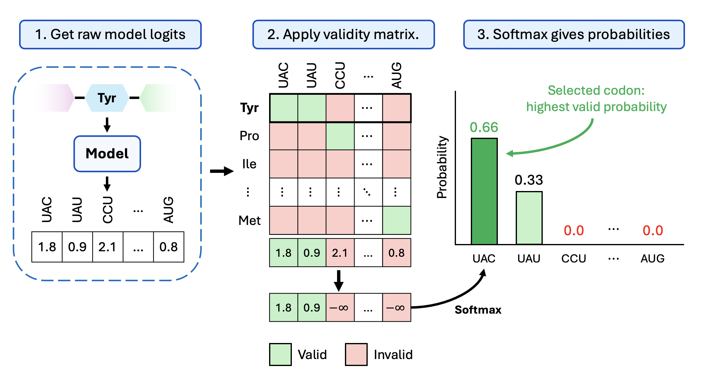
Applying a codon validity matrix before softmax: invalid codons are assigned logits of negative infinity, so their probabilities become zero and only biologically valid codons can be selected.¶
Here is what the validity matrix looks like in Python:
# Imports
import torch
from collections import defaultdict
# Here, we define the complete codon to amino acid map - this shows the exact amino acid each codon encodes
TRANSL = {
'TTT':'F','TTC':'F','TTA':'L','TTG':'L','CTT':'L','CTC':'L','CTA':'L','CTG':'L',
'ATT':'I','ATC':'I','ATA':'I','ATG':'M','GTT':'V','GTC':'V','GTA':'V','GTG':'V',
'TCT':'S','TCC':'S','TCA':'S','TCG':'S','AGT':'S','AGC':'S',
'CCT':'P','CCC':'P','CCA':'P','CCG':'P','ACT':'T','ACC':'T','ACA':'T','ACG':'T',
'GCT':'A','GCC':'A','GCA':'A','GCG':'A','TAT':'Y','TAC':'Y',
'TAA':'_','TAG':'_','TGA':'_',
'CAT':'H','CAC':'H','CAA':'Q','CAG':'Q','AAT':'N','AAC':'N','AAA':'K','AAG':'K',
'GAT':'D','GAC':'D','GAA':'E','GAG':'E','TGT':'C','TGC':'C','TGG':'W',
'CGT':'R','CGC':'R','CGA':'R','CGG':'R','AGA':'R','AGG':'R',
'GGT':'G','GGC':'G','GGA':'G','GGG':'G',
}
# Create the validity matrix
# Map each amino acid to the list of codon IDs that code for it (this basically creates the inverse of TRANSL above)
AA_TO_VALID = defaultdict(list)
for cd, aa in TRANSL.items(): AA_TO_VALID[aa].append(cd2id[cd])
# Create the Boolean validity matrix - VALID[a, c] is True if codon c codes for amino acid a
VALID = torch.zeros(SRC_VOCAB, TGT_VOCAB, dtype=torch.bool)
for aa, codon_ids in AA_TO_VALID.items():
VALID[aa2id[aa], codon_ids] = True
Why Use Transformers¶
As in Session 3, ESM-2 is used as a frozen feature extractor. This time we keep per-residue features rather than mean pooling them into one protein-level vector. Remember that ESM-2 is a transformer-based network. Transformers are good at sequence modelling because they use attention, which lets each position in the sequence look at other positions and decide which ones matter for the current prediction.
For codon prediction, the best codon for one amino acid may depend on neighbouring amino acids, local sequence composition, or organism-specific codon usage. The context really matters.
In our notebook, we’ll build a small transformer prediction head on top of the ESM2 features. This is useful for codon prediction because the best codon at one position may depend on other positions in the same gene. A transformer can learn these dependencies more flexibly than a model that looks only at a small local window.
In practice, we provide the amino acid embedding from ESM-2, a custom codon embedding using PyTorch’s built-in embedding layer (the same for all masked codons), and a positional embedding which records amino/codon position in sequence. For each masked entry in the codon embedding, the model outputs logits for the codon vocabulary. We then apply the validity constraint and select the highest-probability codon.

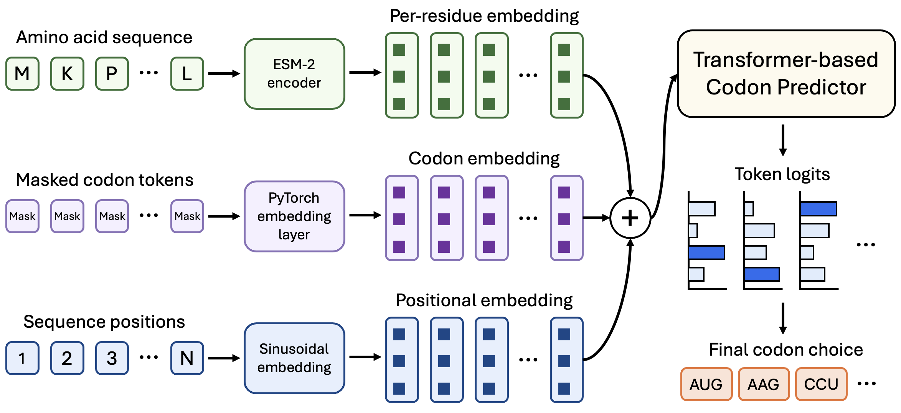
An architecture diagram showing amino acid sequence input, ESM2 per-residue features, codon mask embeddings, positional embeddings, a transformer encoder, and output logits over the codon vocabulary at each position.¶
Discussion
In Session 3 we mean-pooled ESM2’s embeddings, but here we keep them per amino acid. Why the difference?
Solution
In Session 3, we predicted one label for the whole protein, so one vector per protein was enough. Here the output is one codon per amino acid, so we need a distinct feature vector at every position, and pooling would destroy exactly the information we need.
Positional Embeddings¶
Transformers do not account for sequence order on their own. This is obviously undesirable for codon prediction, so, we’ll add positional information through a positional embedding.
This assigns a numeric representation to each position in the sequence. For example, a simple positional embedding could be to number the amino acids by the order they appear, so that a sequence like AWGWAG becomes \([1, 2, 3, 4, 5, 6]\).
In practice, we may use sinusoidal embeddings, which encode position through a more complex mathematical transformation. The result is a vector of numbers for each position which informs the model that each position is different. This tells the model that the first A in a sequence is not necessarily equivalent to the hundredth A.
In a sinusoidal positional embedding, each position is represented by a pattern of sine and cosine values. These vectors are added to the token representations so the model can distinguish positions.
Why sine and cosine? - They have useful mathematical properties such as being continuous functions and are easy to differentiate during backpropagation.
Sinusoidal positional embeddings use waves of different frequencies, represented by the following formulas:
Here, \(pos\) is the sequence position, \(i\) is any index of the embedding vector, and \(d\) is the size of the embedding (length of the vector). You’ll find more information about sinusoidal embeddings in the notebook.
You don’t need to memorise the formula, just remember that each position receives a unique, smooth pattern that the transformer can use to recover sequence order.
In the notebooks, we represent our sinusoidal positional embedding as follows:
# Define the sinusoidal position embedding, which encodes each token's position in the sequence
class SinusoidalPosEnc(nn.Module):
# Pass in the important arguments the class needs - the dimension of our embedding and the max sequence length
def __init__(self, d_model, max_len=MAX_LEN):
super().__init__()
# Take our token positions and encode them as a vector of sine and cosine terms
# Here, we define an empty table that will hold one row per position
pe = torch.zeros(max_len, d_model)
# Create a vector of position indices (0, 1, 2, ...)
pos = torch.arange(0, max_len, dtype=torch.float).unsqueeze(1)
# Now we calculate the denominator
div = 1.0 / (10000.0 ** (torch.arange(0, d_model, 2, dtype=torch.float) / d_model))
# Then even dimensions get sines
pe[:, 0::2] = torch.sin(pos * div)
# And odd dimensions get cosines
pe[:, 1::2] = torch.cos(pos * div)
# Save the table as a buffer (this is a tensor which the model sees, but doesn't train)
self.register_buffer('pe', pe.unsqueeze(0))
# We add the position encoding directly to the token embeddings
def forward(self, x): return x + self.pe[:, : x.size(1)]
Discussion
Why use sinusoidal embeddings rather than simply numbering the positions 1, 2, 3, …?
Solution
Integers are unbounded, so position 1000 would dominate the token representation numerically, and the scale would differ wildly between short and long sequences. Sine and cosine values stay bounded in \([-1, 1]\), give every position a unique smooth pattern, are continuous and easily differentiable, and extend naturally to positions longer than those seen in training.
Cross-Entropy Loss and Accuracy¶
At every real sequence position, the model produces logits over the codon vocabulary. Since this is essentially the same task as classification, we can use the same loss term, cross-entropy, to compare each predicted codon token with the true codon token.
We can also calculate the accuracy as the percentage of correctly predicted codons. In the next notebook, we’ll build a network that trains to a relatively high accuracy, in a relatively short number of epochs (as seen below).

Training loss, validation loss and masked validation accuracy for the codon predictor.¶
Baselines¶
In order to determine just how well our model is performing, we’ll compare its predictions to a baseline. A good baseline provides a simple, easy-to-compute best guess for each codon.
In this case, we’ll use the highest-frequency codons (HFC) as a baseline - this means that for each amino acid, the baseline always picks the most common codon seen in the training data.
If our transformer can’t beat this baseline, then the model may not be learning sequence context at all. It may just be learning to pick the most common codon for each amino acid.
I’ll leave it up to you to work through the notebook and see just how well our model performs in practice.
Overview of the Final Practical Session¶
In the final practical session, we will build a small sequence-to-sequence model for codon prediction.
The workflow is:
Load amino acid-DNA sequence pairs from the CodonTransformer dataset - this provides pairs of amino acids and the DNA sequences which encode them. We’ll again restrict our analysis to E. coli proteins for brevity.
Tokenise amino acid sequences and codon sequences.
Extract amino acid sequence features from ESM-2 (this time keeping per-residue representations).
Append a small transformer model onto the end of ESM-2.
Add sinusoidal positional embeddings so the transformer can understand sequence order.
Train the transformer head to predict a codon for each amino acid position.
Apply the validity constraint so predicted codons encode the correct amino acids.
Evaluate whether the predicted DNA sequences are accurate reconstructions (especially when compared to the HFC baseline).
5. Concluding Remarks¶
Across the four sessions, we’ve seen an introduction to generative AI concepts and their practical applications to the life sciences.
What We Covered¶
In Session 1, we introduced the fundamental concepts underpinning deep learning and built some primitive neural networks.
In Session 2, we built a simple image generator using an autoencoder. We compressed image data into a low-dimensional latent space, reconstructed the input image and decoded new latent points into synthetic images. This gave us the first version of a generative model and showed why latent spaces can be useful for interpretation.
In Session 3, we moved from image data to sequence data. We introduced protein language models and ubiquitous techniques used in genAI, such as tokenisation, embedding, attention and transfer learning. We used ESM2 as a frozen encoder and trained a smaller model on top to predict a discrete protein property.
Finally, in Session 4, we connected sequence modelling to a drug-discovery application. We learned about autoregressive models, vocabularies, positional embeddings and the advantages of using transformers. We built a transformer-based codon predictor, which reconstructed plausible codon sequences from amino acid sequences.
Other Applications of Generative AI to Life Sciences¶
The models in this workshop are small and simple teaching examples, but GenAI for LS extends much further.
For example, generative AI is being used in:
Inpainting microscopy data: This involves learning synthetic image segments to remove artefacts, restore missing optical sections and potentially reduce imaging time or photodamage.
Vision-language models for medical imaging: Vision language models (VLMs) are an extension of large language models which produce text data conditioned on image data. In medical imaging, VLMs are used to automatically generate diagnoses and reports in radiology, pathology or microscopy images.
Diffusion models for image segmentation with uncertainty: Diffusion models, which are known primarily for image generation, can be used to create image masks of segmentation candidates. By running these models multiple times, it is possible to track segmentation uncertainty.
As generative models become increasingly capable, we’re uncovering new and profound applications to the life sciences. Used carefully, generative AI gives life scientists a practical way to learn from complex data and build interpretable tools that can support real biological and clinical discovery.
Tips for Using Generative AI in Life Science¶
Set random seeds and document everything you do so experiments are easy to reproduce.
Clean the data before modelling: check labels, identifiers, duplicates, missing values and leakage between train and test splits.
Make data FAIR where possible (findable, accessible, interoperable and reusable). Open-source your data and put it on a repository like Zenodo.
Watch for hallucinations and plausible-looking nonsense, especially when models generate text, images, structures or sequences. Always evaluate your outputs.
Keep simple baselines. A complex model should beat a simple method for the right reasons.
Always treat generated outputs as hypotheses until they are validated experimentally or clinically.
How Sweden AI Factory Can Help¶
Sweden AI Factory supports start-ups, small-to-medium enterprises, academics, and public sector workers who want to use AI. Our services are fully-subsidised by the Horizon Europe EuroHPC JU initiative, the SRC and Vinnova.
We can help identify opportunities to use AI, design workflows, build prototypes, scale models to high-performance computers (which we also help you access), and evaluate model behaviour.
Sweden AI Factory has its own Life Science team, but we accept projects from any discipline. You can learn more and get in touch through the Sweden AI Factory website.
Quick Reference¶
Glossary¶
External references¶
Here is a (non exhaustive) list of external resources for further study after this lesson:
Relevant papers¶
Miscellaneous resources¶
Some ML challenges or benchmarks¶
Some courses for deeper learning:¶
Intro to Deep Learning with PyTorch, the course is quite intuitive
Coursera courses by Andrew Ng:
AI for everyone, for beginners who won’t do ML projects but are curious about what AI really is and what AI can do
ML course and DL course, quite intensive courses for beginner/intermediate-level researchers who will do ML/DL projects
Structuring Machine Learning Projects, how to conduct ML projects with useful ML engineering strategies
Book: Ian Goodfellow and Yoshua Bengio and Aaron Courville - Deep Learning. A really thorough, detailed (though math-heavy) book on everything (for example Generative Adverserial Networks or Autoencoders) you want to know about deep learning
Book: Simon J.D. Prince - Understanding Deep Learning. A less dense and slightly more modern overview of deep learning with coding examples for each chapter.
Book: Aston Zhang, Zachary C. Lipton, Mu Li and Alexander J. Smola - Dive into Deep Learning. Popular, free resource containing interactive exercises.
Instructor’s guide¶
Why we teach this lesson¶
Intended learning outcomes¶
Timing¶
Preparing exercises¶
e.g. what to do the day before to set up common repositories.
Other practical aspects¶
Interesting questions you might get¶
Typical pitfalls¶
Learning outcomes¶
This material is for researchers and practitioners in life sciences who want to learn about generative AI applications.
By the end of this module, learners should:
Understand what generative AI is and how generative models (autoencoders, transformers and multimodal systems) are applied to biological data.
Hands-on experience training and using models for:
Image analysis and reconstruction (autoencoders).
Protein feature extraction and structure prediction (protein language models).
Drug discovery (codon prediction).
Understand key concepts such as latent space representations, intermediate embeddings and attention mechanisms.
Experience with real biomedical datasets including X-ray images and protein sequences.
Methods for evaluating models with practical metrics, visualisations and interpretability tools (e.g. saliency maps).
See also¶
Credit
This workshop was developed by Sweden AI Factory for life science researchers and practitioners.
Don’t forget to check out additional course materials from the Sweden AI Factory lesson library.
License
CC BY-SA for media and pedagogical material
Copyright © 2026, Sweden AI Factory, Luca Panconi, Ashwin Mohanan, Fatemeh Rahimian, António Brito. . This material is released by Sweden AI Factory under the Creative Commons Attribution-ShareAlike 4.0 International (CC BY-SA 4.0).
Canonical URL: https://creativecommons.org/licenses/by-sa/4.0/
You are free to
Share — copy and redistribute the material in any medium or format for any purpose, even commercially.
Adapt — remix, transform, and build upon the material for any purpose, even commercially.
The licensor cannot revoke these freedoms as long as you follow the license terms.
Under the following terms
Attribution — You must give appropriate credit , provide a link to the license, and indicate if changes were made . You may do so in any reasonable manner, but not in any way that suggests the licensor endorses you or your use.
ShareAlike — If you remix, transform, or build upon the material, you must distribute your contributions under the same license as the original.
No additional restrictions — You may not apply legal terms or technological measures that legally restrict others from doing anything the license permits.
Notices
You do not have to comply with the license for elements of the material in the public domain or where your use is permitted by an applicable exception or limitation .
No warranties are given. The license may not give you all of the permissions necessary for your intended use. For example, other rights such as publicity, privacy, or moral rights may limit how you use the material.
This deed highlights only some of the key features and terms of the actual license. It is not a license and has no legal value. You should carefully review all of the terms and conditions of the actual license before using the licensed material.
MIT for source code and code snippets
MIT License
Copyright (c) 2026, Sweden AI Factory, Luca Panconi, Ashwin Mohanan, Fatemeh Rahimian, António Brito.
Permission is hereby granted, free of charge, to any person obtaining a copy of this software and associated documentation files (the “Software”), to deal in the Software without restriction, including without limitation the rights to use, copy, modify, merge, publish, distribute, sublicense, and/or sell copies of the Software, and to permit persons to whom the Software is furnished to do so, subject to the following conditions:
The above copyright notice and this permission notice shall be included in all copies or substantial portions of the Software.
THE SOFTWARE IS PROVIDED “AS IS”, WITHOUT WARRANTY OF ANY KIND, EXPRESS OR IMPLIED, INCLUDING BUT NOT LIMITED TO THE WARRANTIES OF MERCHANTABILITY, FITNESS FOR A PARTICULAR PURPOSE AND NONINFRINGEMENT. IN NO EVENT SHALL THE AUTHORS OR COPYRIGHT HOLDERS BE LIABLE FOR ANY CLAIM, DAMAGES OR OTHER LIABILITY, WHETHER IN AN ACTION OF CONTRACT, TORT OR OTHERWISE, ARISING FROM, OUT OF OR IN CONNECTION WITH THE SOFTWARE OR THE USE OR OTHER DEALINGS IN THE SOFTWARE.